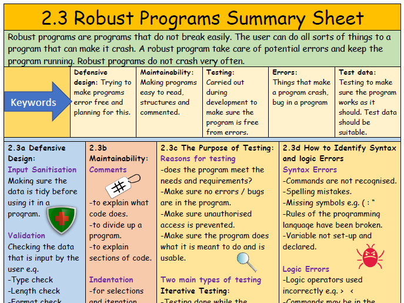

2.3 Producing Robust Programs
Here you will revise the following:
- Defensive Design (Validation, Authentication)
- Testing (Types of testing, Test plans)
- Maintainability (Comments, Indentation)
Defensive Design
Defensive design is about writing code that anticipates potential errors or misuse and handles them gracefully, making the program more robust.
Validation
Validation: Checking if data meets certain criteria before it is processed.
This prevents incorrect or malicious data from causing errors.
Types of validation checks:
- Presence Check: Ensures data has been entered.
- Length Check: Checks if data is the correct number of characters.
- Range Check: Checks if data is within a specified numerical range.
- Type Check: Checks if data is of the correct data type (e.g., integer, string).
- Format Check: Checks if data matches a specific pattern (e.g., postcode format).
- Look-up Table: Checks if data exists in a predefined list of valid entries.
Authentication
Authentication: Verifying the identity of a user or system.
This is commonly done using usernames and passwords to ensure only authorised users can access a program or data.
It's your turn!
A program asks the user to enter their age. What type of validation check would be most appropriate to ensure the age entered is reasonable (e.g., between 0 and 120)? Explain why.
Testing
Testing is crucial to find and fix errors (bugs) in a program.
Types of Testing
- Syntax Errors: Errors that break the rules of the programming language (e.g., misspelling a command). The program won't run.
- Logic Errors: Errors where the program runs but does not do what it is intended to do (e.g., using `+` instead of `-`).
- Runtime Errors: Errors that occur while the program is running (e.g., dividing by zero).

Test Plans
Test Plan: A document outlining the tests that will be conducted on a program.
A good test plan includes:
- Test cases (inputs).
- Expected outputs for each test case.
- Actual outputs.
- Whether the test passed or failed.
- Notes on any bugs found.
Test data should include:
- Normal Data: Typical, valid data.
- Boundary Data: Data at the limits of acceptable ranges.
- Erroneous Data: Invalid or incorrect data.
It's your turn!
Give an example of a runtime error and explain why it would cause a program to crash.
Maintainability
Maintainability refers to how easy it is to modify, understand, and debug code in the future.

Comments
Comments: Explanations added to the code that are ignored by the computer but help humans understand what the code does.
Good comments explain the *why* and *how* of complex code sections, not just the *what*.
// This function calculates the area of a circle
FUNCTION CalculateCircleArea(radius)
// Area = pi * radius^2
SET area = 3.14159 * radius * radius
RETURN area
END FUNCTION
Indentation
Indentation: Using spaces or tabs to structure code visually, showing blocks of code that belong together (e.g., inside loops or IF statements).
Proper indentation makes code much easier to read and understand.
IF score >= 50 THEN
DISPLAY "Pass"
ELSE
DISPLAY "Fail"
END IF // Clearly shows which lines are inside the IF/ELSE
It's your turn!
Explain two ways that writing maintainable code helps other programmers (or yourself in the future) understand a program.